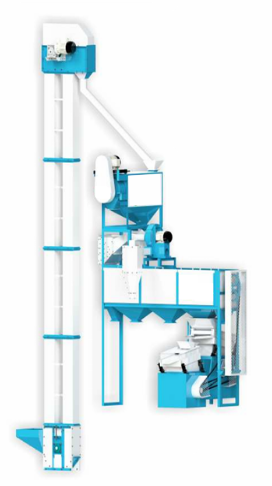

SKU: SAL-M-11
Fully Automatic Grain Cleaning Machine 500 Kg.
| Sub-Category | Spices Processing |
| Capacity | 500 Kg Per Hour |
| Size | Length - 18 Feet, Width - 8 Feet, Height - 14 Feet |
| Technical | Three screen round separator attached with destoner D-1, destoner D-2 & blower cleaner cyclone system and elevator |
| Power | 5.5 HP/4.25 KW |
| Brand | Salvin |
Upgrade your grain processing with our High-Efficiency Fully Automatic Grain Cleaning Machine – 500 Kg Capacity — built for farmers, grain mills, and agro-processing units that demand maximum output with minimum effort.
Engineered with precision multi-layer screening technology, this heavy-duty, commercial-grade grain cleaner efficiently removes dust, husk, stones, and all foreign particles from wheat, rice, maize, soybean, millet, and more — delivering consistently clean grain in minutes.
Our industry-grade grain cleaning machine is designed for zero manual labor operation. Simply load your grain and let the machine do the rest. With its energy-saving motor and durable long-lasting body, you get reliable, high-performance cleaning day after day — with minimal downtime and low maintenance costs.
Engineered with precision multi-layer screening technology, this heavy-duty, commercial-grade grain cleaner efficiently removes dust, husk, stones, and all foreign particles from wheat, rice, maize, soybean, millet, and more — delivering consistently clean grain in minutes.
Our industry-grade grain cleaning machine is designed for zero manual labor operation. Simply load your grain and let the machine do the rest. With its energy-saving motor and durable long-lasting body, you get reliable, high-performance cleaning day after day — with minimal downtime and low maintenance costs.
Rate this product:
Click a star to submit your review